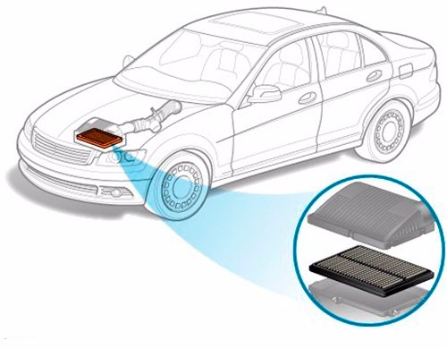

Всё про воздушный фильтр для автомобиля
Воздушный фильтр можно назвать лёгкими автомобиля: весь поступающий в двигатель воздух проходит именно через него, и от качества фильтра напрямую зависит нормальная работа мотора – главного и, пожалуй, самого дорогостоящего узла автомобиля.
Назначение и принцип работы
Для оптимальной работы двигателя необходимо определенное количество воздуха. В среднем, на сжигание 1 л бензина уходит 15 кг (!) воздуха. Причем требования к качеству этого воздуха достаточно высоки: определенная температура, плотность, насыщенность кислородом и, конечно, чистота. Даже микроскопические частички пыли могут привести к быстрому износу тонко подогнанных деталей, поэтому качество фильтрации воздуха – вопрос более чем серьезный.
Самым опасным видом загрязнения воздуха является песок: неотфильтрованные песчинки стирают металлические поверхности, как наждак, приводя их в полную негодность. Второй по степени опасности враг – вода. Водяные пары, попадая в блок цилиндров, вызывают ржавчину, имеющую мощные абразивные свойства. И, наконец, обычная пыль, сажа с трассы и даже цветочная пыльца здоровья автомобилю не прибавляют. Максимально эффективная очистка поступающего в ДВС воздуха и есть задачей воздушного фильтра двигателя.
В нормальных условиях эксплуатации воздушный фильтр уменьшает износ двигателя на 15-20%, а в сложных условиях – на 200%. Воздушный фильтр расположен под капотом в специальном корпусе: через воздуховод в него поступает воздух, проходит через фильтрующий элемент и направляется дальше на расходомер воздуха, а затем в камеру сгорания. Размещение и способ крепления позволяет менять воздушный фильтр за считанные минуты на СТО или самостоятельно.
Виды, типы, особенности конструкции На все современные легковые автомобили устанавливаются бумажные воздушные фильтры различной конфигурации. По качеству фильтрации, надежности и габаритам они превзошли масляно-инерционные и угольные. Производители воздушных фильтров разрабатывают новые материалы, улучшающие производительность и качество фильтрации. Одной только бумаги, используемой разными фирмами, существует более 400 видов! А сейчас для изготовления фильтров используют синтетические микропористые материалы, более прочные и долговечные, чем бумага, и при этом лучше выполняющие свои функции.
Чтобы фильтр мог задерживать воду, не теряя своих свойств, бумагу пропитывают различными составами с содержанием смол, благодаря которым фильтр сохраняет работоспособность даже при высокой влажности, воздействии микроскопических капель бензина, машинного масла, антифриза и другой агрессивной химии, встречающейся на пути автомобиля. А для увеличения срока службы применяется технология глубинной фильтрации: это трехслойная структура бумаги, поры которой уменьшаются от поверхности к середине. Более крупные частицы задерживаются поверхностными слоями, мелкие – глубокими, а сквозь фильтр проходит почти идеально чистый воздух нужной температуры. Использование поверхностной фильтрации – по принципу простой сетки – привело бы к моментальному засорению фильтра. По форме различают: Круглые (кольцевые) – фильтры старого образца, которые устанавливаются на автомобили с карбюраторной системой. Поток поступающего воздуха оказывает достаточно сильное давление, и такие фильтры часто снабжаются каркасом из алюминиевой сетки для увеличения прочности. Проблема кольцевых фильтров в недостаточной площади фильтрации, при том что места такая конструкция занимает довольно много.